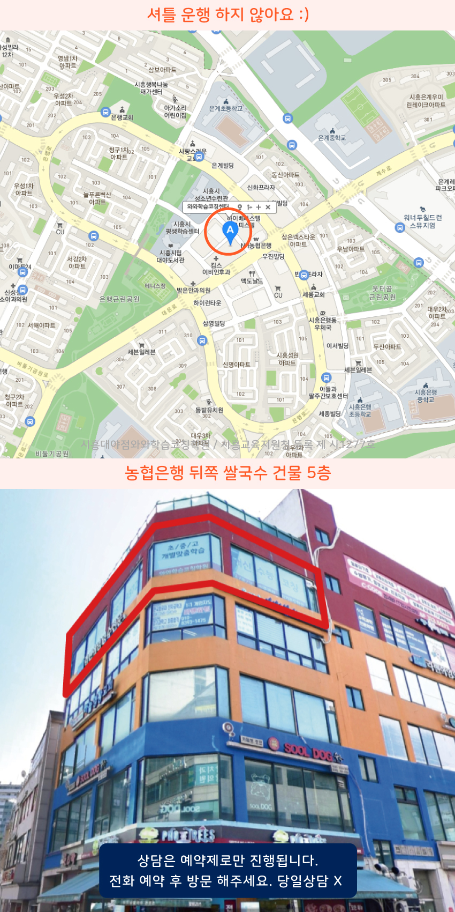

Area
시흥대야 중등영어학원
시흥대야에서 중학생영어학원을 찾는다면 수업 목표를 먼저 정하고 수업 내용을 복습 계획과 함께 안내하는 곳이 편해요. 대야동은 기초부터 문장 독해까지 단계별로 점검해 어휘와 문법을 함께 다지는 흐름이 중요해요. 신천동에서는 오답을 정리하는 방식으로 단어와 독해를 반복해서 체감되는 실력을 쌓을 수 있어요. 은계지구 학원도 정기적으로 학습 현황을 확인하고 과제 진행을 조율해 꾸준함을 유지하도록 도와요.
Area
시흥대야에서 중학생영어학원을 찾는다면 수업 목표를 먼저 정하고 수업 내용을 복습 계획과 함께 안내하는 곳이 편해요. 대야동은 기초부터 문장 독해까지 단계별로 점검해 어휘와 문법을 함께 다지는 흐름이 중요해요. 신천동에서는 오답을 정리하는 방식으로 단어와 독해를 반복해서 체감되는 실력을 쌓을 수 있어요. 은계지구 학원도 정기적으로 학습 현황을 확인하고 과제 진행을 조율해 꾸준함을 유지하도록 도와요.
Schools
시흥대야 중등은계중과 은행고 그리고 소래중 학생 내신 대비 영어는 기초부터 문법 독해까지 수업과 과제 점검으로 매주 복습과 오답 정리까지 탄탄히 합니다.
Academy
시험 직전에 영어를 몰아서 하다가 듣기나 독해가 갑자기 무너지는 일이 흔합니다. 시흥대야나 대야동, 신천동처럼 학원 선택지가 많을수록 더 바쁘게만 움직이기 쉬운데, 사실 문제는 “언제”가 아니라 “무엇을 어떤 순서로” 다뤘는지에 있습니다. 중학교 영어는 단어·문법·독해가 서로 연결되어 있어서 한 부분이 비면 다음 단원 이해가 계속 늦어집니다. 그래서 시흥대야 중등영어학원을 찾는 가정에서는 단기 점수보다 학습 흐름을 먼저 잡아보는 편이 좋습니다.
예를 들어 은계지구의 은계초, 은계중 학생들은 초등 때 익힌 문장 구조를 중학교식 독해로 옮기는 과정에서 자주 헷갈립니다. 은행초와 은행중, 은행고까지 이어지는 학생도 마찬가지로, 지문을 읽어도 정답 근거를 찾지 못하면 반복 학습이 “시간만 늘고 내용은 그대로”가 되기 쉽습니다. 이럴 때는 수업에서 배운 포인트를 오답 문장 단위로 정리하고, 같은 유형을 다시 풀어보며 왜 틀리는지 원인을 좁혀야 합니다. 웃터골초, 대야초, 소래초처럼 배경이 다른 학생들도 결국 문제풀이 방식이 달라지므로 점검 기준을 일관되게 가져가는 게 중요합니다.
시험을 2주 앞두고 벼락공부를 시작하면 소래고나 소래중, 신천중, 신천고, 대흥중 학생 모두에게 시간 압박이 커집니다. 반대로 평소에 주간 계획을 세우고, 단어는 짧게 자주, 문법은 개념 확인 후 예문 확장, 독해는 지문 유형별로 근거 찾기를 반복하면 시험 전후의 성적 변동이 줄어듭니다. 시흥대야 중학생영어학원에서 다루는 방식도 보통 이런 “축적-점검-보완” 구조를 중심으로 운영됩니다.
마지막으로 학원을 고를 때는 수업만 보고 판단하지 말고, 어떤 방식으로 오답을 관리하는지, 플래너를 통해 과제가 실제로 수행되는지, 학교 시험 주기와 맞춰 복습 타이밍이 설계되는지 확인해보세요. 대야동·신천동·은계지구처럼 통학권이 넓은 지역일수록 학생별 학습 점검이 반복적으로 이뤄지는지까지 살펴보면 선택이 더 안정적입니다.

Programs


어휘 암기부터 문장 해석, 문법 적용, 지문 분석까지 학생의 취약 영역을 중심으로 학습합니다. 학교별 내신 유형을 점검하고 학년이 올라갈수록 필요한 독해력과 문제 해결 능력을 차근차근 키워갑니다.
학생이 어려워하는 개념과 문제 유형을 먼저 파악한 뒤 단계별 문제 풀이를 진행합니다. 풀이 과정에서 반복되는 실수를 점검하고 취약 단원을 다시 학습하며 응용 문제까지 해결할 수 있도록 수학 실력을 탄탄하게 다져갑니다.
교과서 작품과 지문을 정확하게 이해하고 핵심 내용을 스스로 파악하는 연습을 진행합니다. 문학과 독서, 문법 등 영역별 학습과 함께 서술형 및 학교 시험에 필요한 문제 분석 능력을 길러줍니다.
소수 인원으로 수업을 진행하며 학생마다 다른 이해도와 학습 속도를 세심하게 확인합니다. 진도와 과제, 복습 상태를 개별적으로 점검하고 필요한 부분은 추가 피드백을 통해 보완하며 꾸준한 학습 흐름을 만들어갑니다.
Map

APPLY
순차적으로 연락드려 예약 도와드립니다.
Guide
학생의 학년보다 현재 학습 수준을 먼저 확인한 뒤 필요한 부분부터 시작합니다. 이전 학년의 개념이 부족하다면 기초 내용을 다시 정리하고, 충분히 이해한 후 다음 단계로 넘어갈 수 있도록 학습 순서를 조정합니다.
수업 과정에서 문제 풀이와 오답, 과제 결과를 지속적으로 살펴봅니다. 반복해서 어려워하는 단원이나 유형을 찾아 원인을 확인하고, 필요한 개념과 문제를 추가로 학습하며 취약한 부분을 보완합니다.
네. 성적 향상을 위한 과목 학습과 함께 계획을 세우고 실천하는 과정도 중요하게 관리합니다. 정해진 학습량을 꾸준히 수행하고 복습하는 습관을 익혀 학생 스스로 공부를 이어갈 수 있는 힘을 키워갑니다.
| 횟수 | 초등 | 중등 | 고등 |
|---|---|---|---|
| 주 5회 | 339,000원 | 336,000원 | 419,000원 |
| 주 4회 | 279,000원 | 301,000원 | 344,000원 |
| 주 3회 | 219,000원 | 236,000원 | - |
| 횟수 | 초등 | 중등 | 고등 |
|---|---|---|---|
| 주 5회 | 389,000원 | 416,000원 | 469,000원 |
| 주 4회 | 319,000원 | 341,000원 | 384,000원 |
| 주 3회 | 249,000원 | 266,000원 | - |
학년, 과목, 수업 시수, 지역에 따라 수업료가 달라질 수 있습니다.